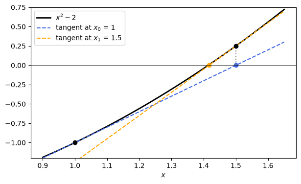
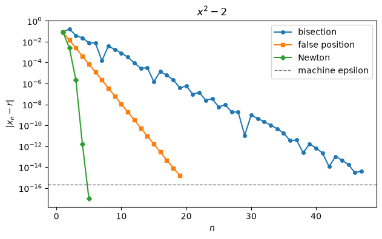
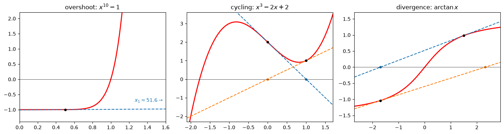

Root Finding II: Newton’s Method#
Contents: 1. the idea: tangent lines · 2. Newton’s method in Python · 3. quadratic convergence · 4. what can go wrong · 5. multiple roots · 6. safeguarded Newton · 7. Newton without derivatives · 8. when to stop · 9. summary · Activity (2 problems)
We use numpy for the numerical methods, sympy for exact derivatives and reference roots, and matplotlib for the plots. This notebook goes with the slides Root Finding II: Newton’s Method.
import sympy as sp
import numpy as np
import matplotlib.pyplot as plt
from IPython.display import display, Math
print("sympy", sp.__version__, "| numpy", np.__version__)
---------------------------------------------------------------------------
ModuleNotFoundError Traceback (most recent call last)
Cell In[1], line 1
----> 1 import sympy as sp
2 import numpy as np
3 import matplotlib.pyplot as plt
4 from IPython.display import display, Math
ModuleNotFoundError: No module named 'sympy'
1. The idea: follow the tangent line#
Bracketing methods only need a sign change, but they converge linearly. Newton’s method also uses the derivative \(f'(x)\). Near the current guess \(x_n\), replace \(f\) by its tangent line
and take the zero of \(\ell\) as the next guess:
The same formula comes from Taylor’s theorem: \(f(x) = f(x_n) + f'(x_n)(x - x_n) + \tfrac12 f''(\xi)(x - x_n)^2\). Dropping the quadratic term leaves the tangent line, and the neglected term is \(O\big((x - x_n)^2\big)\), which is why the method is so fast once \(x_n\) is close to the root.
false position |
Newton |
|
|---|---|---|
model of \(f\) |
secant line through two bracket points |
tangent line at one point |
needs |
a bracket \([a, b]\) |
a starting guess \(x_0\) and \(f'\) |
keeps a bracket |
yes |
no |
The cell below draws the first two Newton steps for \(f(x) = x^2 - 2\) from \(x_0 = 1\).
def f_sq(t):
return t**2 - 2
def df_sq(t):
return 2 * t
xs = np.linspace(0.9, 1.65, 300)
fig, ax = plt.subplots(figsize=(7, 4))
ax.plot(xs, f_sq(xs), "k", lw=2, label="$x^2 - 2$")
xn = 1.0
for n, color in [(0, "royalblue"), (1, "orange")]:
x_next = xn - f_sq(xn) / df_sq(xn)
ax.plot(xs, f_sq(xn) + df_sq(xn) * (xs - xn), "--", color=color, label=f"tangent at $x_{n}$ = {xn:.4g}")
ax.plot([xn], [f_sq(xn)], "o", color="k")
ax.plot([x_next], [0], "o", color=color)
ax.vlines(x_next, 0, f_sq(x_next), color="gray", ls=":")
print(f"x_{n + 1} = {x_next:.10f}, error = {abs(x_next - np.sqrt(2)):.1e}")
xn = x_next
ax.axhline(0, color="k", lw=0.5)
ax.set_ylim(-1.2, 0.75); ax.set_xlabel("$x$"); ax.legend(loc="upper left")
plt.show()
x_1 = 1.5000000000, error = 8.6e-02
x_2 = 1.4166666667, error = 2.5e-03

2. Newton’s method in Python#
The function returns the list hist of all iterates \(x_1, x_2, \ldots\), and it stops if it lands exactly on a root.
Details in the code below:
Two evaluations per step: one of \(f\) and one of \(f'\).
if fx == 0: in bisection we did not need this test. Here we do: at a double root both \(f\) and \(f'\) vanish, and the step \(0/0\) would stop the method with an error even though \(x\) is the root (Section 5).if dfx == 0: a horizontal tangent never crosses the axis, so the step is undefined.Raise, don’t return: bisection always returns a good answer. Newton may not converge, so reaching
maxitis an error, not a result.Step-size test \(|x_{n+1} - x_n| < \text{tol}\): there is no bracket, so there is no error bound; Section 8 shows why the step is a good error estimate for Newton.
def newton(f, df, x0, tol=1e-12, maxit=50):
x = x0
hist = []
for n in range(maxit):
fx, dfx = f(x), df(x) # two evaluations per step
if np.abs(fx) < 1e-12: # landed very close to a root
return x, hist
if np.abs(dfx) < 1e-12: # derivative is effectively zero
raise ZeroDivisionError(f"f'(x) = 0 at x = {x}: the tangent is horizontal")
dx = fx / dfx # Newton step
x = x - dx
hist.append(x)
if abs(dx) < tol: # step-size test
return x, hist
raise RuntimeError(f"no convergence in {maxit} steps (last x = {x})")
x_star, hist = newton(f_sq, df_sq, 1.0)
e = [abs(xn - np.sqrt(2)) for xn in hist]
print(f"{'n':>3} {'x_n':>20} {'|x_n - sqrt2|':>14} {'e_n / e_(n-1)^2':>16}")
for n in range(len(hist)):
ratio = f"{e[n] / e[n - 1]**2:16.3f}" if 0 < n and e[n] > 0 and e[n - 1] > 1e-15 else ""
print(f"{n + 1:>3} {hist[n]:20.16f} {e[n]:14.2e} {ratio}")
print(f"\n1/(2 sqrt2) = {1 / (2 * np.sqrt(2)):.3f}")
n x_n |x_n - sqrt2| e_n / e_(n-1)^2
1 1.5000000000000000 8.58e-02
2 1.4166666666666667 2.45e-03 0.333
3 1.4142156862745099 2.12e-06 0.353
4 1.4142135623746899 1.59e-12 0.354
5 1.4142135623730951 0.00e+00
1/(2 sqrt2) = 0.354
The number of correct digits goes \(2, 6, 12, 16\): it doubles every step until machine precision. The ratio \(e_n / e_{n-1}^2\) settles to a constant; Section 3 explains where \(1/(2\sqrt2) \approx 0.354\) comes from.
Getting \(f'\) with SymPy. Writing \(f'\) by hand is error-prone. SymPy differentiates the expression exactly with sp.diff, and sp.lambdify turns both expressions into NumPy functions that newton can use.
x = sp.Symbol('x', real=True)
expr = sp.cos(x) - x
dexpr = sp.diff(expr, x)
display(Math(r"f(x) = " + sp.latex(expr) + r", \qquad f'(x) = " + sp.latex(dexpr)))
f_cos = sp.lambdify(x, expr, 'numpy')
df_cos = sp.lambdify(x, dexpr, 'numpy')
r_cos, hist = newton(f_cos, df_cos, 1.0)
print(f"root of cos x - x: {r_cos:.15f} after {len(hist)} steps")
root of cos x - x: 0.739085133215161 after 4 steps
3. Quadratic convergence#
Let \(e_n = x_n - r\). Taylor’s theorem around \(x_n\), evaluated at the root, gives
Divide by \(f'(x_n)\) and use the Newton formula:
For \(x^2 - 2\): \(f'' = 2\) and \(f'(\sqrt2) = 2\sqrt2\), so \(C = 1/(2\sqrt2)\): exactly the ratio in the table of Section 2.
order \(p\) in \(\lvert e_{n+1}\rvert \approx C\,\lvert e_n\rvert^p\) |
method |
|---|---|
\(p = 1\) (linear) |
bisection, false position |
\(p \approx 1.618\) |
secant (Section 7) |
\(p = 2\) (quadratic) |
Newton |
Theorem (local convergence). If \(f\) is twice continuously differentiable near \(r\), \(f(r) = 0\) and \(f'(r) \neq 0\), there is a \(\delta > 0\) such that Newton converges quadratically for every \(x_0\) with \(|x_0 - r| < \delta\). The theorem does not say how small \(\delta\) is: Newton is a local method.
To compare with the bracketing methods we copy bisection and false_position from the previous notebook (unchanged). On a semilogy plot, linear convergence is a straight line; Newton’s curve bends down.
def bisection(f, a, b, tol=1e-12, maxit=200):
fa = f(a)
if np.sign(fa) == np.sign(f(b)):
raise ValueError("[a, b] is not a bracket: f(a) and f(b) have the same sign")
hist = []
for n in range(maxit):
c = a + (b - a) / 2
fc = f(c)
hist.append(c)
if (b - a) / 2 < tol:
break
if np.sign(fc) == np.sign(fa):
a, fa = c, fc
else:
b = c
return c, hist
def false_position(f, a, b, tol=1e-12, maxit=200):
fa, fb = f(a), f(b)
if np.sign(fa) == np.sign(fb):
raise ValueError("[a, b] is not a bracket: f(a) and f(b) have the same sign")
hist = []
c_old = np.inf
for n in range(maxit):
c = b - fb * (b - a) / (fb - fa)
fc = f(c)
hist.append(c)
if abs(c - c_old) < tol:
break
c_old = c
if np.sign(fc) == np.sign(fa):
a, fa = c, fc
else:
b, fb = c, fc
return c, hist
runs = [("bisection", bisection(f_sq, 1, 2, tol=1e-14)[1], "o-"),
("false position", false_position(f_sq, 1, 2, tol=1e-14)[1], "s-"),
("Newton", newton(f_sq, df_sq, 1.0, tol=1e-14)[1], "D-")]
fig, ax = plt.subplots(figsize=(7, 4))
for name, hist, style in runs:
err = np.maximum(np.abs(np.array(hist) - np.sqrt(2)), 1e-17) # avoid log(0)
ax.semilogy(np.arange(1, len(err) + 1), err, style, ms=4, label=name)
ax.axhline(np.finfo(float).eps, color="gray", ls="--", lw=1, label="machine epsilon")
ax.set_title("$x^2 - 2$"); ax.set_xlabel("$n$"); ax.set_ylabel(r"$|x_n - r|$"); ax.legend()
plt.show()

4. What can go wrong#
Newton only uses local information. Far from the root the tangent can point anywhere.
example |
\(x_0\) |
what happens |
|---|---|---|
\(x^{10} - 1\) |
\(0.5\) |
overshoot: \(f'(x_0) \approx 0.02\), so the first step jumps to \(x_1 \approx 51.6\); dozens of steps to crawl back |
\(x^3 - 2x + 2\) |
\(0\) |
cycling: \(0, 1, 0, 1, \ldots\) forever; the real root \(r \approx -1.769\) is never reached |
\(\arctan x\) |
\(1.5\) |
divergence: each step overshoots more; from \(x_0 = 1.3\) it converges to \(0\) |
To watch a run that may not converge, newton is not useful: it raises an error and we lose the iterates. The helper newton_steps below just takes a fixed number of steps, with no stopping test.
def newton_steps(f, df, x0, nsteps):
# Return [x_1, ..., x_nsteps] without any stopping test.
xs = []
xn = x0
for n in range(nsteps):
xn = xn - f(xn) / df(xn)
xs.append(xn)
return xs
def f_ten(t):
return t**10 - 1
def df_ten(t):
return 10 * t**9
def f_cyc(t):
return t**3 - 2 * t + 2
def df_cyc(t):
return 3 * t**2 - 2
def df_atan(t):
return 1 / (1 + t**2)
x_star, hist = newton(f_ten, df_ten, 0.5)
print(f"x^10 - 1, x0 = 0.5: x1 = {hist[0]:.2f}, converged to {x_star} after {len(hist)} steps")
print("x^3-2x+2, x0 = 0 :", newton_steps(f_cyc, df_cyc, 0.0, 6))
print("arctan x, x0 = 1.5:", [round(float(v), 2) for v in newton_steps(np.arctan, df_atan, 1.5, 6)])
print("arctan x, x0 = 1.3:", [round(float(v), 6) for v in newton_steps(np.arctan, df_atan, 1.3, 6)])
try:
newton(f_cyc, df_cyc, 0.0, maxit=30)
except RuntimeError as err:
print("\nnewton on x^3 - 2x + 2 from x0 = 0 ->", err)
x^10 - 1, x0 = 0.5: x1 = 51.65, converged to 1.0 after 43 steps
x^3-2x+2, x0 = 0 : [1.0, 0.0, 1.0, 0.0, 1.0, 0.0]
arctan x, x0 = 1.5: [-1.69, 2.32, -5.11, 32.3, -1575.32, 3894976.01]
arctan x, x0 = 1.3: [-1.161621, 0.858896, -0.374241, 0.034019, -2.6e-05, 0.0]
newton on x^3 - 2x + 2 from x0 = 0 -> no convergence in 30 steps (last x = 0.0)
cases = [("overshoot: $x^{10} - 1$", f_ten, df_ten, 0.5, 1, (0, 1.6), (-1.4, 2.2)),
("cycling: $x^3 - 2x + 2$", f_cyc, df_cyc, 0.0, 2, (-2.1, 1.7), (-2.3, 3.6)),
(r"divergence: $\arctan x$", np.arctan, df_atan, 1.5, 2, (-2.7, 2.9), (-1.7, 1.7))]
fig, axes = plt.subplots(1, 3, figsize=(14, 3.8))
for ax, (title, f, df, x0, nsteps, xlim, ylim) in zip(axes, cases):
xs = np.linspace(*xlim, 400)
ax.plot(xs, f(xs), "r", lw=2)
xn = x0
for n in range(nsteps):
ax.plot(xs, f(xn) + df(xn) * (xs - xn), "--", color=f"C{n}")
ax.plot([xn], [f(xn)], "ko", ms=4)
xn = xn - f(xn) / df(xn)
ax.plot([xn], [0], "o", color=f"C{n}", ms=4)
ax.axhline(0, color="k", lw=0.5)
ax.set_xlim(xlim); ax.set_ylim(ylim); ax.set_title(title)
axes[0].annotate(r"$x_1 \approx 51.6 \rightarrow$", xy=(1.58, -0.75), ha="right", color="C0")
plt.tight_layout()
plt.show()

5. Multiple roots: Newton slows down to linear#
\(f(x) = (x - 1)^2 (x + 1)\) has a double root at \(r = 1\): \(f(1) = f'(1) = 0\). It touches the axis without a sign change, so no bracket exists. Newton still converges, but the theorem of Section 3 does not apply (\(f'(r) = 0\)).
If \(f(x) = (x - r)^m h(x)\) with \(h(r) \neq 0\) (a root of multiplicity \(m\)), then
linear, with \(\rho = 1 - \tfrac1m\) (\(\rho = \tfrac12\) for a double root, no better than bisection). If \(m\) is known, the modified Newton step
is quadratic again. We get it from newton without changing the code: pass \(f'/m\) instead of \(f'\).
def f_dbl(t):
return (t - 1)**2 * (t + 1)
def df_dbl(t):
return 2 * (t - 1) * (t + 1) + (t - 1)**2
def df_dbl_over_2(t): # f'/m with m = 2: newton then takes the modified step
return df_dbl(t) / 2
x_star, hist = newton(f_dbl, df_dbl, 2.0, maxit=100)
e = [abs(v - 1) for v in hist]
print(f"Newton : {len(hist)} steps, ratios e_n/e_(n-1) =", [round(e[n] / e[n - 1], 3) for n in range(1, 7)])
x_star, hist = newton(f_dbl, df_dbl_over_2, 2.0)
print(f"modified Newton: {len(hist)} steps, errors =", [f"{abs(v - 1):.1e}" for v in hist])
Newton : 21 steps, ratios e_n/e_(n-1) = [0.55, 0.532, 0.519, 0.51, 0.505, 0.503]
modified Newton: 4 steps, errors = ['1.4e-01', '4.6e-03', '5.3e-06', '7.0e-12']
6. Safeguarded Newton: Newton with a bracket#
Bracketing methods are reliable; Newton is fast. Safeguarded Newton keeps both:
keep a bracket \([a, b]\) at all times, updated with the sign of \(f(x)\) exactly as in bisection;
take the Newton step if it lands inside \([a, b]\);
otherwise (or if \(f'(x) = 0\)) take a bisection step.
It is guaranteed to converge, like bisection, and near the root Newton steps always land inside, so it is quadratic. The function is the one from the slides, with the list hist added.
def safe_newton(f, df, a, b, tol=1e-12, maxit=100):
fa = f(a)
if np.sign(fa) == np.sign(f(b)):
raise ValueError("[a, b] is not a bracket: f(a) and f(b) have the same sign")
x = a + (b - a) / 2
hist = []
for n in range(maxit):
fx, dfx = f(x), df(x)
if np.sign(fx) == np.sign(fa):
a, fa = x, fx # root in [x, b]
else:
b = x # root in [a, x]
if dfx != 0:
xnew = x - fx / dfx # try Newton
if dfx == 0 or not (a <= xnew <= b):
xnew = a + (b - a) / 2 # fall back to bisection
hist.append(xnew)
if abs(xnew - x) < tol:
return xnew, hist
x = xnew
return x, hist
def steps_to(hist, r, tol):
# first n (counting from 1) with |x_n - r| < tol, or None
for n in range(len(hist)):
if abs(hist[n] - r) < tol:
return n + 1
return None
results = [("bisection on [0, 1.3]", bisection(f_ten, 0, 1.3, tol=1e-14)[1]),
("false position on [0, 1.3]", false_position(f_ten, 0, 1.3, tol=1e-14, maxit=500)[1]),
("Newton from x0 = 0.65", newton(f_ten, df_ten, 0.65, tol=1e-14)[1]),
("safeguarded Newton on [0, 1.3]", safe_newton(f_ten, df_ten, 0, 1.3, tol=1e-14)[1])]
print("x^10 - 1, steps to reach an error of 1e-6:")
for name, hist in results:
print(f" {name:>31}: {steps_to(hist, 1.0, 1e-6)}")
print("\nsafeguarded Newton iterates:", [round(v, 8) for v in results[3][1][:4]])
print("plain Newton from the midpoint 0.65 first jumps to", round(newton_steps(f_ten, df_ten, 0.65, 1)[0], 2))
x^10 - 1, steps to reach an error of 1e-6:
bisection on [0, 1.3]: 20
false position on [0, 1.3]: 61
Newton from x0 = 0.65: 21
safeguarded Newton on [0, 1.3]: 4
safeguarded Newton iterates: [0.975, 1.00309098, 1.00004251, 1.00000001]
plain Newton from the midpoint 0.65 first jumps to 5.41
The first safeguarded step is a bisection step: the Newton step from \(0.65\) would land at \(5.4\), outside the bracket \([0.65, 1.3]\). After that, every Newton step lands inside and three steps finish the job.
7. Newton without derivatives#
Newton’s idea only needs a slope at \(x_n\). If \(f'\) is unknown or expensive, approximate it.
Option 1: finite-difference Newton.
Still two evaluations per step. If \(h\) is too large the slope is inaccurate (\(O(h)\) error) and convergence is no longer quadratic; if \(h\) is too small, rounding in \(f(x_n + h) - f(x_n)\) ruins the slope.
Option 2: the secant method. We already know \(f(x_{n-1})\), so we can use the slope through the last two iterates for free:
finite-difference Newton |
secant |
|
|---|---|---|
start |
\(x_0\) |
\(x_0\), \(x_1\) |
evaluations per step |
2 |
1 |
order \(p\) |
\(\approx 2\) (if \(h \approx 10^{-8}\)) |
\(\frac{1 + \sqrt5}{2} \approx 1.618\) |
bracket / guarantee |
no / no |
no / no |
The secant formula is the false position formula, but it always keeps the two newest points instead of a bracket. The function secant is given in Problem 2 (the same code as on the slides, with the list hist added). The cell below tries finite-difference Newton with three choices of \(h\); \(f'\) is never used.
def fd_newton(f, x0, h, nsteps):
# Newton with a forward-difference slope; nsteps steps, no stopping test.
xs = []
xn = x0
for n in range(nsteps):
slope = (f(xn + h) - f(xn)) / h
xn = xn - f(xn) / slope
xs.append(xn)
return xs
hs = [1e-3, 1e-8, 1e-15]
print(f"{'n':>3}" + "".join(f"{'h = ' + format(h, '.0e'):>14}" for h in hs))
runs = [fd_newton(f_sq, 1.0, h, 6) for h in hs]
for n in range(6):
print(f"{n + 1:>3}" + "".join(f"{abs(run[n] - np.sqrt(2)):14.1e}" for run in runs))
n h = 1e-03 h = 1e-08 h = 1e-15
1 8.6e-02 8.6e-02 3.6e-02
2 2.5e-03 2.5e-03 2.8e-03
3 3.0e-06 2.1e-06 2.5e-04
4 1.1e-09 1.6e-12 2.3e-05
5 3.8e-13 2.2e-16 2.1e-06
6 0.0e+00 0.0e+00 1.9e-07
\(h = 10^{-8}\) reproduces exact Newton; \(h = 10^{-3}\) is still fast but no longer doubles the digits; \(h = 10^{-15}\) stalls well above machine precision because the slope is computed from two almost equal numbers.
8. When do we stop?#
Without a bracket there is no guaranteed error bound. But quadratic convergence makes the step size a very good error estimate:
So \(|x_{n+1} - x_n| \approx |e_n|\), and the new iterate \(x_{n+1}\) is far more accurate than that.
test |
for Newton |
|---|---|
step size \(\lvert x_{n+1} - x_n\rvert < \text{tol}\) (or \(\text{tol}\cdot\lvert x_{n+1}\rvert\), relative) |
the natural choice: estimates the error of \(x_n\) |
residual \(\lvert f(x_n)\rvert\) |
a useful extra check that we found a root, not just a small step (see Problem 2) |
maximum number of iterations |
always; raise an error if it is reached |
The cell below compares the step with the true errors for \(x^2 - 2\).
x_star, hist = newton(f_sq, df_sq, 1.0)
xs = [1.0] + hist
print(f"{'n':>3} {'step |x_n - x_(n-1)|':>21} {'error of x_(n-1)':>17} {'error of x_n':>13}")
for n in range(1, 5):
print(f"{n:>3} {abs(xs[n] - xs[n - 1]):21.2e} {abs(xs[n - 1] - np.sqrt(2)):17.2e} {abs(xs[n] - np.sqrt(2)):13.2e}")
n step |x_n - x_(n-1)| error of x_(n-1) error of x_n
1 5.00e-01 4.14e-01 8.58e-02
2 8.33e-02 8.58e-02 2.45e-03
3 2.45e-03 2.45e-03 2.12e-06
4 2.12e-06 2.12e-06 1.59e-12
9. Summary#
bisection |
false position |
Newton |
secant |
|
|---|---|---|---|---|
needs |
bracket |
bracket |
\(x_0\) and \(f'\) |
\(x_0\), \(x_1\) |
always converges |
yes |
yes |
no (local) |
no (local) |
order \(p\) |
1 |
1 |
2 |
1.618 |
evaluations per step |
1 |
1 |
2 (\(f\), \(f'\)) |
1 |
order per evaluation |
1 |
1 |
\(\sqrt2 \approx 1.41\) |
1.618 |
double roots |
no |
no |
yes, linear |
yes, linear |
natural stopping test |
\((b-a)/2 < \text{tol}\) |
step size |
step size |
step size |
Rule of thumb: reliability from brackets, speed from Newton; in practice, combine them (safeguarded Newton). Next session: the same methods in scipy.optimize (newton, brentq, root_scalar).
Activity#
Two problems. Problem 1 uses SymPy to get exact derivatives, runs Newton on the test problems from the previous notebook, and checks the quadratic convergence constant \(C = f''(r)/(2f'(r))\). Problem 2 gives you the secant method as a ready-made function secant, and asks you to race it against Newton and safeguarded Newton, counting function evaluations. Each step says what your code should do. Write the code in the empty cell, then run the check cell: it prints your results next to the expected ones. Open a Hint box only when you are stuck.
About None and pass: replace None by your answer, and delete pass once you write the body of a function.
Useful commands for this activity
you want to … |
command |
|---|---|
derivative of an expression \(e\) |
|
turn an expression into a NumPy function |
|
substitute a number into an expression |
|
add to a list / list of lists |
|
the methods |
|
steps to reach an error tol |
|
Problem 1: Newton with SymPy derivatives#
Goal: let SymPy compute \(f'\) exactly, run newton on the four test problems of the previous notebook, and check that the error really behaves like \(e_{n+1} \approx C\,e_n^2\).
What you will see: Newton needs 4 steps where bisection needed 34, except on \(x^{10} - 1\), where a bad first step costs 22 steps. The observed ratios \(e_n / e_{n-1}^2\) approach the constant \(|f''(r)/(2f'(r))|\) predicted by the theory.
Run the cell below to create the test problems (do not change it). It is the same setup as in the previous notebook: problem number k has the name names[k], the expression exprs[k], the bracket a_list[k], b_list[k], the NumPy function funcs[k], and an accurate reference root r_ref[k].
x = sp.Symbol('x', real=True)
names = ["x^2 - 2", "x^10 - 1", "x^3 - x - 2", "cos x - x"]
exprs = [x**2 - 2, x**10 - 1, x**3 - x - 2, sp.cos(x) - x]
a_list = [1, 0, 1, 0]
b_list = [2, sp.Rational(13, 10), 2, 1]
funcs = []
r_ref = []
for k in range(len(exprs)):
funcs.append(sp.lambdify(x, exprs[k], 'numpy'))
r_ref.append(float(sp.nsolve(exprs[k], x, (a_list[k], b_list[k]), solver='bisect')))
print("reference roots:", r_ref)
reference roots: [1.4142135623730951, 1.0, 1.5213797068045676, 0.7390851332151607]
Step 1: derivatives with SymPy#
Write code that:
builds a list
dexprswith one entry per test problem: entrykis the derivative ofexprs[k]with respect tox;builds a list
dfuncs: entrykisdexprs[k]turned into a NumPy function withsp.lambdify;displays each name together with its derivative.
Hint
Start with two empty lists before the loop:
dexprs, dfuncs = [], [].Loop over the problem numbers with
for k in range(len(exprs)):.Inside the loop: compute the derivative with
sp.diff, append it todexprs, thenappenditslambdifyversion todfuncs. Use the same arguments as the setup cell uses forfuncs.To show the results, use
print(names[k])anddisplay(dexprs[k]).
dexprs, dfuncs = [], []
for k in range(len(exprs)):
d = sp.diff(..., x)
...
# your code here: replace each None
dexprs, dfuncs = None, None
# check: compare your results with the expected ones
if dexprs is None or dfuncs is None:
print("Something is still None: write the code in the cell above, then run this cell again.")
else:
expected = ["2*x", "10*x**9", "3*x**2 - 1", "-sin(x) - 1"]
for k in range(len(expected)):
print(f"{names[k]:>12}: f' = {str(dexprs[k]):<12} f'(1) = {dfuncs[k](1.0):9.5f} (expected: {expected[k]})")
Something is still None: write the code in the cell above, then run this cell again.
Step 2: Newton from the midpoint of each bracket#
With tol = 1e-10, write code that, for every test problem k,
sets the starting guess to the midpoint of the bracket:
x0 = a + (b - a)/2witha = float(a_list[k]),b = float(b_list[k]);runs
xk, hist = newton(funcs[k], dfuncs[k], x0, tol=tol);appends to the list
steps2the number of stepslen(hist), and to the listerr2the errorabs(xk - r_ref[k]);prints one line per problem with these two numbers.
The check cell compares your number of steps with the 34 steps bisection needs for the same tolerance.
Hint
Same pattern as Step 2 of Problem 1 in the previous notebook: two empty lists before the loop.
newtonneeds bothfuncs[k]anddfuncs[k], then the starting guess.newtonreturns two things:xk, hist = newton(...). Do not forgettol=tol.Call the result
xk, notx: the namexis the SymPy symbol, and we still need it in Step 3.
tol = 1e-10
steps2, err2 = [], []
for k in range(len(funcs)):
a, b = float(a_list[k]), float(b_list[k])
x0 = ...
xk, hist = newton(...)
...
# your code here: replace each None
tol = 1e-10
steps2, err2 = None, None
# check: compare your results with the expected ones
if steps2 is None or err2 is None:
print("Something is still None: write the code in the cell above, then run this cell again.")
else:
expected = [4, 22, "3 or 4", 4]
for k in range(len(steps2)):
print(f"{names[k]:>12}: steps = {steps2[k]:>2} (expected: {expected[k]:>2}; bisection: 34), error = {err2[k]:.1e} (expected: below 1e-10)")
Something is still None: write the code in the cell above, then run this cell again.
Step 3: the constant \(C\) of quadratic convergence#
Section 3 predicts \(|e_{n+1}| \approx C\,|e_n|^2\) with \(C = \left|\dfrac{f''(r)}{2f'(r)}\right|\). Write code that builds a list C_theory: entry k is this number for test problem k, computed exactly with SymPy and then evaluated at the reference root r_ref[k].
The check cell runs Newton again and prints your \(C\) next to the observed ratios \(e_n / e_{n-1}^2\).
Hint
The second derivative is
sp.diff(exprs[k], x, 2); you already have the first one indexprs[k].Build the expression
f'' / (2 f'), substitute the root with.subs(x, r_ref[k]), and convert withfloat(...). Takeabs(...)at the end.If you get an error about
x, check that you did not overwrite the symbolxin Step 2 (run the setup cell of Problem 1 again).
C_theory = []
for k in range(len(exprs)):
d2 = sp.diff(...)
C_theory.append(abs(float(...)))
# your code here: replace None
C_theory = None
# check: compare your results with the expected ones
if C_theory is None:
print("C_theory is still None: write the code in the cell above, then run this cell again.")
else:
expected = [0.354, 4.5, 0.768, 0.221]
for k in range(len(C_theory)):
a, b = float(a_list[k]), float(b_list[k])
xk, hist = newton(funcs[k], dfuncs[k], a + (b - a) / 2, tol=1e-14)
e = [abs(v - r_ref[k]) for v in hist]
ratios = [round(float(e[n] / e[n - 1]**2), 3) for n in range(1, len(e)) if e[n - 1] > 1e-7 and e[n] > 0]
print(f"{names[k]:>12}: C = {C_theory[k]:.3f} (expected: {expected[k]}), observed ratios: {ratios[-3:]}")
C_theory is still None: write the code in the cell above, then run this cell again.
Questions:
For \(x^{10} - 1\) the observed ratios only approach \(C = 4.5\) at the very end. Why does the theory describe only the last few steps?
A large \(C\) means a slower start of the quadratic phase. Which feature of \(f\) near the root makes \(C\) large?
Problem 2: the secant method and the race#
Goal: use the given secant function and compare newton, secant and safe_newton on the four test problems, counting both steps and function evaluations.
What you will see: the secant method needs a few more steps than Newton, but fewer function evaluations, because it never evaluates \(f'\). On \(x^{10} - 1\) it “converges” to a point that is not a root at all: without a bracket, a small step does not prove anything.
Step 1: the secant function (given)#
The function secant(f, x0, x1, tol=1e-12, maxit=50) is given: it is the code from the slides, with the list hist added. It has the same outputs as newton: it returns (x, hist), the last iterate and the list of all new iterates \(x_2, x_3, \ldots\) Run the cell below (do not change it), then run the test cell after it.
How it works. Before the loop it evaluates f0, f1 = f(x0), f(x1) and starts hist = []. In each step it
raises a
ZeroDivisionErroriff1 == f0(the secant line is horizontal);computes the step
dx = f1 * (x1 - x0) / (f1 - f0): Newton’s step with \(f'(x_1)\) replaced by the secant slope;shifts: the old newest point becomes the older point,
x0, f0 = x1, f1;computes the new point
x1 = x1 - dx, its valuef1 = f(x1)(the only new evaluation), and appendsx1tohist;returns
x1, histifabs(dx) < tol.
After the loop it raises a RuntimeError, exactly as newton does.
Read the code: the order inside the loop matters. dx is computed with the old x0, x1; after the shift in step 3, x0 holds the old x1, so x1 - dx in step 4 still uses the right value. f is never called on x0 inside the loop: its value is kept in f0.
def secant(f, x0, x1, tol=1e-12, maxit=50):
# given: run this cell, do not change it
f0, f1 = f(x0), f(x1)
hist = []
for n in range(maxit):
if f1 == f0:
raise ZeroDivisionError("f(x1) = f(x0): the secant line is horizontal")
dx = f1 * (x1 - x0) / (f1 - f0) # secant step
x0, f0 = x1, f1 # shift: drop the oldest point
x1 = x1 - dx
f1 = f(x1) # the only new evaluation
hist.append(x1)
if abs(dx) < tol:
return x1, hist
raise RuntimeError(f"no convergence in {maxit} steps (last x = {x1})")
# test: run the given secant on x^2 - 2 from x0 = 1, x1 = 2 (f_sq(t) = t**2 - 2 is defined in Section 1)
xs_, hist = secant(f_sq, 1.0, 2.0)
print("x =", repr(xs_), " (expected: 1.4142135623730951 or ...095)")
print("steps =", len(hist), " (expected: 7)")
print("first four =", [round(v, 6) for v in hist[:4]], " (expected: [1.333333, 1.4, 1.414634, 1.414211])")
x = 1.4142135623730951 (expected: 1.4142135623730951 or ...095)
steps = 7 (expected: 7)
first four = [1.333333, 1.4, 1.414634, 1.414211] (expected: [1.333333, 1.4, 1.414634, 1.414211])
Step 2: the race, steps to reach an error of \(10^{-6}\)#
The three methods need different inputs, so they cannot share one loop as in the previous notebook. For every test problem k, with a = float(a_list[k]), b = float(b_list[k]), tol=1e-14 and maxit=100, run
newtononfuncs[k],dfuncs[k]fromx0 = b;secantonfuncs[k]fromx0 = a,x1 = b;safe_newtononfuncs[k],dfuncs[k]on the bracket[a, b].
Build a list of lists steps3: entry steps3[k] is [steps for Newton, steps for secant, steps for safeguarded Newton], where each number is steps_to(hist, r_ref[k], 1e-6). Print one line per problem.
Hint
One loop over the problems
k. Inside, startrow = [], run the three methods one after the other, and appendsteps_to(...)of eachhisttorow; then appendrowtosteps3.Every method returns
(x, hist); you only needhist, so you can write_, hist = newton(...).steps_toreturnsNoneif the method never gets within1e-6of the root. That is a result, not a bug.
steps3 = []
for k in range(len(funcs)):
a, b = float(a_list[k]), float(b_list[k])
row = []
_, hist = newton(..., tol=1e-14, maxit=100)
row.append(steps_to(hist, r_ref[k], 1e-6))
...
steps3.append(row)
print(names[k], row)
# your code here: replace None
steps3 = None
# check: compare your results with the expected ones, then count function evaluations
if steps3 is None:
print("steps3 is still None: write the code in the cell above, then run this cell again.")
else:
expected = [[4, 5, 3], [6, None, 4], [4, 6, 2], [3, 4, 3]]
for k in range(len(expected)):
print(f"{names[k]:>12}: [Newton, secant, safeguarded] = {steps3[k]} (expected: {expected[k]})")
# evaluations of f or f': Newton 2 per step; secant 2 to start + 1 per step;
# safeguarded Newton 2 to start (f(a), f(b)) + 2 per step
print("\nfunction evaluations to reach an error of 1e-6:")
for k in range(len(steps3)):
n_new, n_sec, n_safe = steps3[k]
evals = [2 * n_new if n_new else None, 2 + n_sec if n_sec else None, 2 + 2 * n_safe if n_safe else None]
print(f"{names[k]:>12}: [Newton, secant, safeguarded] = {evals}")
steps3 is still None: write the code in the cell above, then run this cell again.
Step 3: look at the errors#
Run the cell below (do not change it): it plots the error of the three methods on the four test problems against the number of function evaluations, using the given secant, and prints the residual \(|f(x)|\) where each method stopped.
fig, axes = plt.subplots(2, 2, figsize=(12, 8))
for k in range(len(funcs)):
ax = axes.flat[k]
a, b = float(a_list[k]), float(b_list[k])
runs = [("Newton", newton(funcs[k], dfuncs[k], b, tol=1e-14, maxit=100), 0, 2),
("secant", secant(funcs[k], a, b, tol=1e-14, maxit=100), 2, 1),
("safeguarded Newton", safe_newton(funcs[k], dfuncs[k], a, b, tol=1e-14, maxit=100), 2, 2)]
for name, (xk, hist), start, per_step in runs:
err = np.maximum(np.abs(np.array(hist) - r_ref[k]), 1e-17)
evals = start + per_step * np.arange(1, len(err) + 1)
ax.semilogy(evals, err, "o-", ms=3, label=name)
print(f"{names[k]:>12}, {name:>18}: stopped at x = {xk:.6g}, residual |f(x)| = {abs(funcs[k](xk)):.1e}")
ax.axhline(np.finfo(float).eps, color="gray", ls="--", lw=1, label="machine epsilon")
ax.set_ylim(1e-17, 1e3); ax.set_title(f"${sp.latex(exprs[k])}$")
ax.set_xlabel("function evaluations"); ax.set_ylabel(r"$|x_n - r|$"); ax.legend()
plt.tight_layout()
plt.show()
secant returned None: finish Step 1 first, then run this cell again.
Questions:
The first two secant points for \(x^2 - 2\) from \(x_0 = 1\), \(x_1 = 2\) are the same as those of false position on \([1, 2]\). Why? From which point on do the two methods differ?
On \(x^{10} - 1\) the secant method stops at \(x \approx 0.18\), far from the root \(1\). Look at its iterates: why is the last step tiny, and which check from Section 8 would have caught the problem?
Per step, Newton is faster than secant; per function evaluation, secant often wins. When would you still choose Newton?
You need the root of a new function and know only a bracket and a formula for \(f'\). Which of the three methods would you choose, and why?